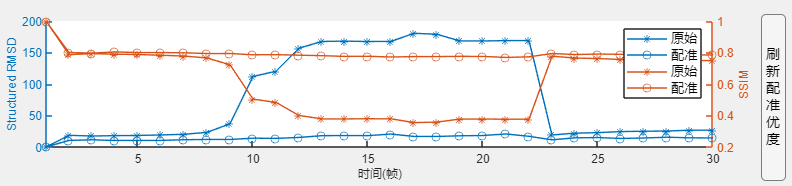
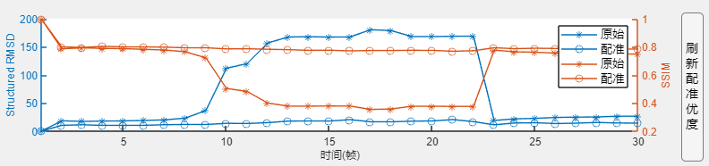

3.配准优度
 配准优度使用结构化方均根强度与结构相似性度量作为统计指标。每条曲线均为与模板数据比较获得。结构化方均根强度越小，结构相似性度量越大，对应配准结果越好。 如果改变源或更改颜色通道，请使用图像右侧按钮刷新配准优度图像。 注1：计算配准优度前请对数据进行空间裁剪，尽可能仅保留所需前景部分，以避免背景或边界对计算配准优度的干扰。 注2：尽管不同颜色通道对应相同的几何变换，仍可能出现配准优度曲线差异。 注3：配准优度绝对数值意义不大，经验上尽可能提高配准优度并满足信号提取要求即可。

配准优度使用结构化方均根强度与结构相似性度量作为统计指标。每条曲线均为与模板数据比较获得。结构化方均根强度越小，结构相似性度量越大，对应配准结果越好。
如果改变源或更改颜色通道，请使用图像右侧按钮刷新配准优度图像。
注1：计算配准优度前请对数据进行空间裁剪，尽可能仅保留所需前景部分，以避免背景或边界对计算配准优度的干扰。
注2：尽管不同颜色通道对应相同的几何变换，仍可能出现配准优度曲线差异。
注3：配准优度绝对数值意义不大，经验上尽可能提高配准优度并满足信号提取要求即可。